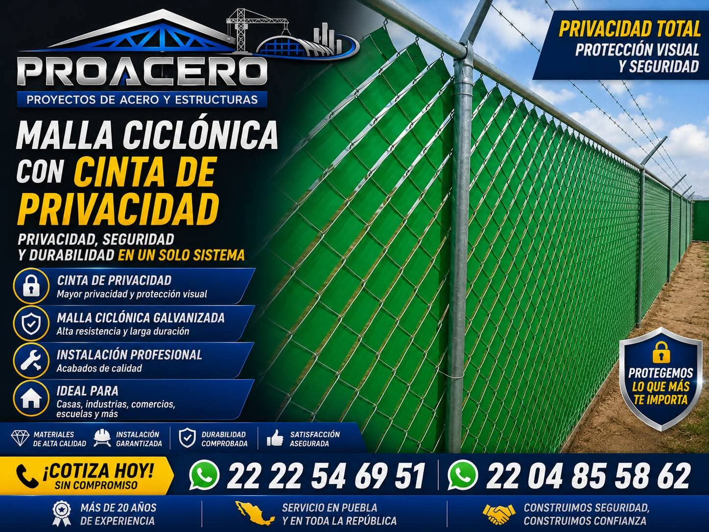
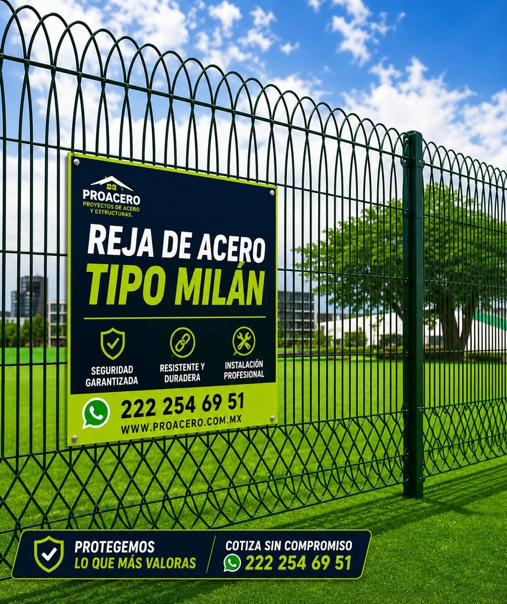
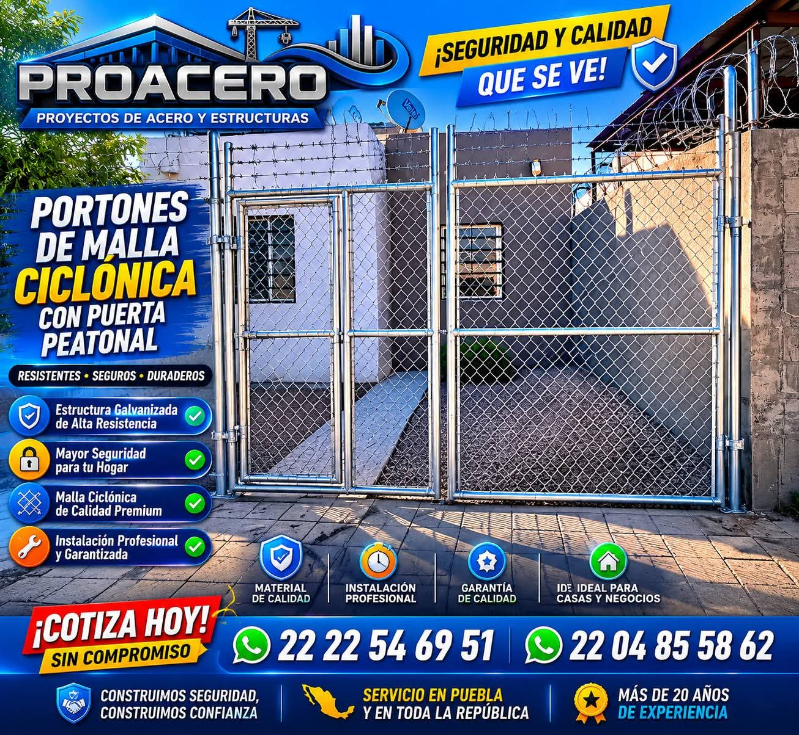
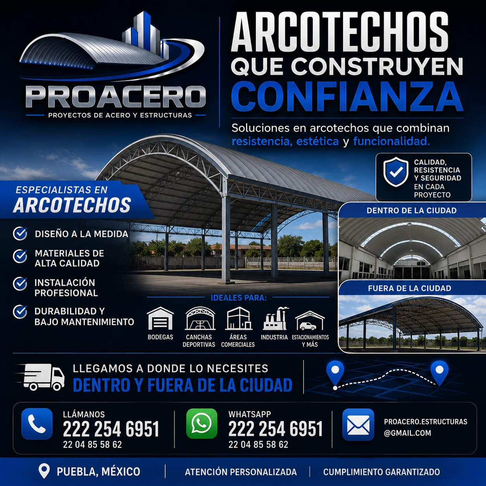
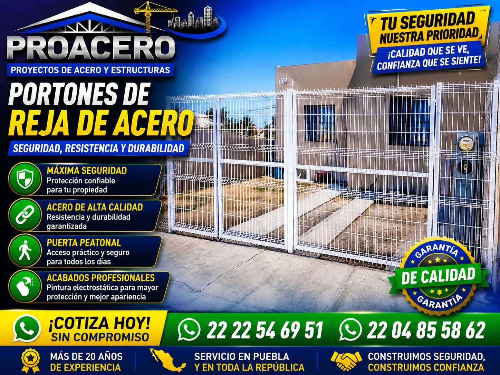
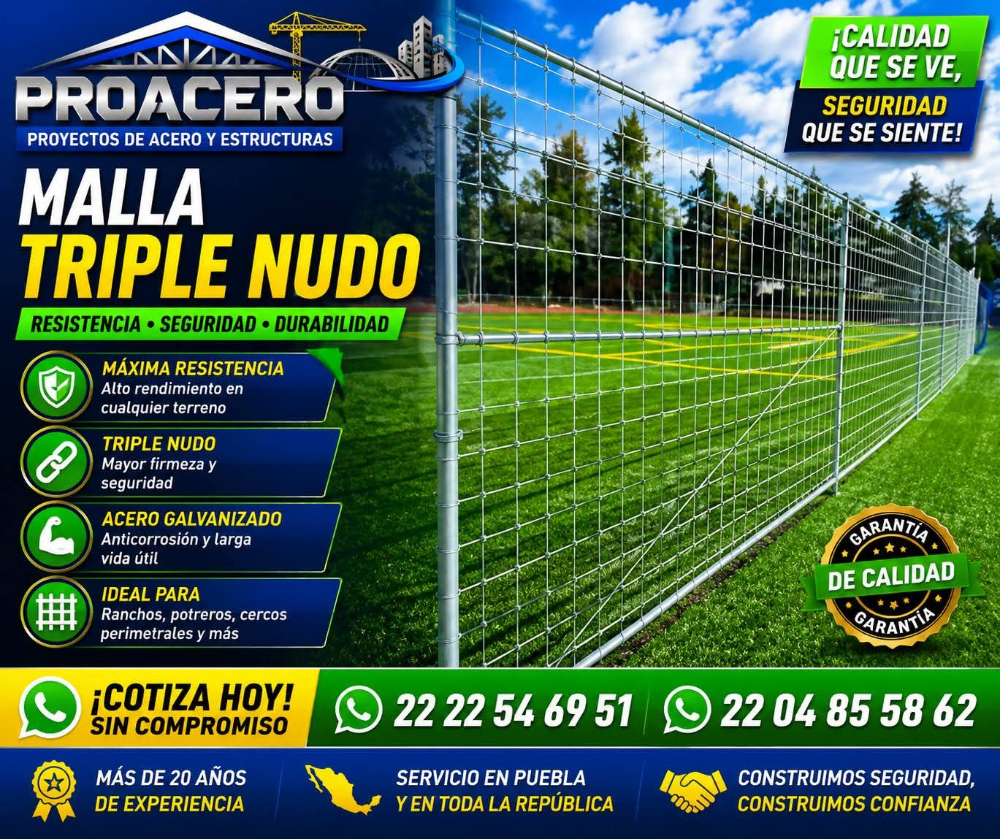

Diseñamos, fabricamos e instalamos malla ciclónica, rejas de acero, portones, cercos eléctricos y arcotechos a la medida. Más de 20 años de experiencia respaldan cada proyecto que entregamos en Puebla y en toda la República Mexicana.
La seguridad de tu propiedad no admite atajos… por eso construimos con materiales de alta calidad y mano de obra especializada.
Más de 20 años de experiencia respaldan cada malla, reja, portón, cerco y arcotecho que instalamos en Puebla y en toda la República Mexicana.
Materiales de Alta Calidad
Acero galvanizado y componentes seleccionados para resistir el uso rudo y el paso del tiempo, en cada malla, reja y estructura.
Instalación Profesional y Garantizada
Mano de obra especializada y garantía de un año en cada instalación, con acabados firmes y de calidad.
Proyectos a la Medida
Diseñamos cada solución según las dimensiones reales de tu casa, empresa, escuela, rancho o terreno.
Cobertura Puebla y toda la República
Llegamos donde lo necesites, dentro y fuera de la ciudad, con atención personalizada de principio a fin.
Un mismo equipo,
tres frentes de trabajo
De la seguridad perimetral a la cubierta de tu nave industrial: cubrimos cada etapa de tu proyecto en acero.



De la visita técnica a la entrega, sin fricciones
Un solo equipo acompaña tu proyecto de seguridad o estructura de acero, del diagnóstico a la instalación terminada.
Contacto y Diagnóstico
Cuéntanos tu proyecto por teléfono o WhatsApp. Identificamos qué solución necesita tu casa, empresa, escuela o terreno.
Cotización sin Compromiso
Preparamos una propuesta a la medida de tu espacio, con materiales de alta calidad y sin letras chiquitas.
Instalación y Garantía
Nuestro equipo instala con mano de obra especializada y garantía de un año en cada proyecto entregado.
Arcotechos que construyen
confianza
Techados curvos diseñados y fabricados a la medida de tu espacio. Soluciones en arcotechos que combinan resistencia, estética y funcionalidad para bodegas, naves industriales, canchas deportivas, áreas comerciales y estacionamientos.
-
Diseño a la Medida
Cada arcotecho se proyecta según las dimensiones y el uso real de tu espacio.
-
Múltiples Aplicaciones
Bodegas, naves industriales, canchas deportivas, áreas comerciales y estacionamientos.
-
Durabilidad y Bajo Mantenimiento
Una estructura pensada para conservarse por años con cuidados mínimos.
-
Dentro y Fuera de la Ciudad
Llegamos a donde lo necesites, en Puebla y en toda la República Mexicana.

en acero y estructuras
acero y estructuras
a la medida
cada instalación
Protegemos lo que más te importa
De casas y residencias a bodegas industriales, adaptamos cada solución a la escala de tu propiedad.
Casas y Residencias
Empresas e Industrias
Escuelas
Canchas Deportivas
Ranchos y Terrenos
Comercios
Malla Ciclónica
y Cercado Perimetral
Delimitamos y protegemos tu propiedad con malla ciclónica galvanizada, PVC y triple nudo, además de malla con cinta de privacidad para mayor discreción visual.
- Malla ciclónica galvanizada y PVC
- Malla triple nudo de alta resistencia
- Malla ciclónica con cinta de privacidad
- Una inversión que aumenta el valor de tu propiedad
- Ideal para casas, industrias y escuelas
- Ideal para ranchos, terrenos y comercios
Rejas de Acero y Portones
Seguridad con estética: rejas de acero en modelos Clásica y Tipo Milán, y portones de malla ciclónica o reja de acero con puerta peatonal incluida.
- Reja de Acero modelo Clásica
- Reja de Acero Tipo Milán
- Portones de malla ciclónica
- Portones de reja de acero
- Puerta peatonal incluida
- Pintura electrostática de protección

Cercos Eléctricos y Concertina
Seguridad que se ve, tranquilidad que se siente: cercos eléctricos y concertina de seguridad para reforzar la protección perimetral de tu propiedad.
- Cercos eléctricos de seguridad
- Concertina de seguridad
- Resistencia y durabilidad garantizada
- Instalación bajo protocolos de seguridad
- Ideal para industrias y comercios
- Refuerzo para muros y bardas existentes
Herrería en General
Fabricamos e instalamos trabajos de herrería a la medida, con la misma calidad y experiencia de más de 20 años que respalda cada proyecto PROACERO.
- Estructuras y trabajos de herrería a la medida
- Garantía de un año en cada trabajo
- Mano de obra especializada
- Acabados profesionales y duraderos

Solicita tu cotización sin compromiso
Cuéntanos de tu proyecto: malla, reja, portón, cerco eléctrico, arcotecho o herrería. Te respondemos por WhatsApp.
Atención Personalizada
Construimos seguridad, construimos confianza. Hablas directo con nuestro equipo.
-
Cobertura
Puebla, México
y en toda la República Mexicana. -
Teléfono